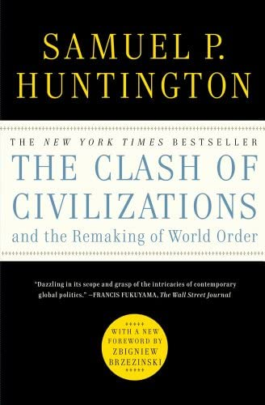
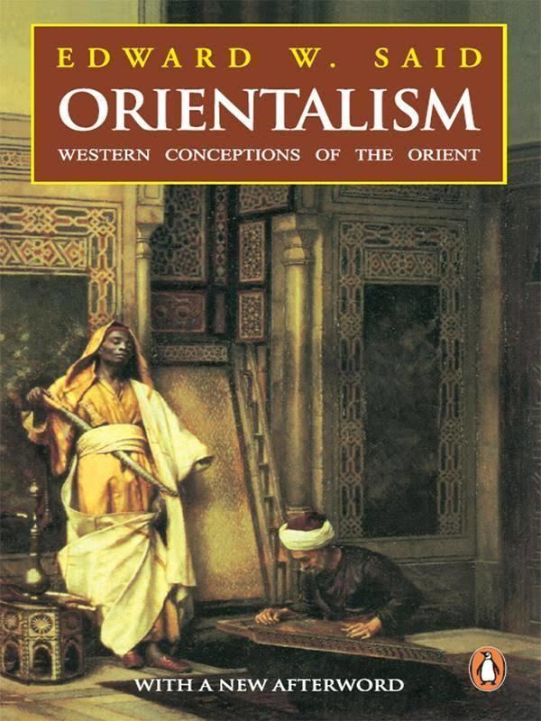

This is Book page
Favorite books:
- The Clash of Civilization 
- Orientalism 
Huntington began his thinking by surveying the diverse theories about the nature of global politics in the post–Cold War period. Some theorists and writers argued that human rights, liberal democracy, and the capitalist free market economy had become the only remaining ideological alternative for nations in the post–Cold War world. Specifically, Francis Fukuyama argued that the world had reached the 'end of history' in a Hegelian sense.
Author: Samuel HuntingtonLanguage: English click for more
Orientalism refers to the Orient, in reference and opposition to the Occident; the East and the West, respectively.[4][5] The word Orient entered the English language as the Middle French orient. The root word oriēns, from the Latin Oriēns, has synonymous denotations: The eastern part of the world; the sky whence comes the sun; the east; the rising sun, etc.; yet the denotation changed as a term of geography.
Author: Edward SaidLanguage: English click for more